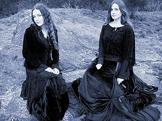
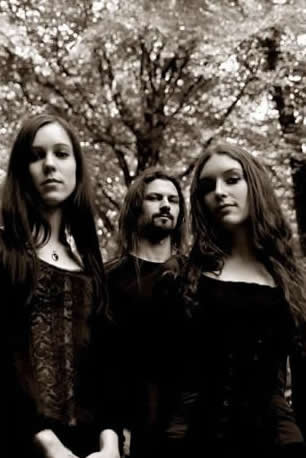

Uma sonoridade que combina elementos da
música clássica e medieval com timbres mais
suaves de strings de sintetizadores e teclados,
uma percussão quase inexistente mas com uma pulsação
rítmica que pode ser confundida com algumas variações
do Metal, como o Doom Metal.
Assim pode ser descrita a proposta musical
do Artesia, uma banda francesa pouco conhecida
do grande público. Até mesmo porque seu estilo
é algo próximo do ethereal ou Dark
Atmospheric: um estilo apreciado apenas por ouvintes
dos circuitos underground da música experimental,
que encontra pouquíssima aceitação
no "mainstream".
Assim, inspirada no som de bandas como
Dark Sanctuary
e Arcana,
trilhas sonoras e música celta; bem como ambientações
naturais como bosques e florestas; e sentimentos como melancolia
e tristeza, que a jovem violinista francesa Agathe, em 2001,
deu início à trajetória do Artesia.
O
nome Artesia, escolhido pela própria Agathe,
é uma referência ao personagem Robert d’Artois,
da saga medieval Reis Malditos (les Rois Maudits)
do escritor francês Maurice Druon. Num primeiro
momento, Agathe, de forma solitária, compunha e arranjava
as músicas do álbum de estréia. Apenas
dois anos mais tarde, precisamente em junho de 2003, foi
ao estúdio para finalmente gravar o trabalho intitulado
l'Eveil de l'Ame, com apenas trinta e oito minutos
de duração divididos em oito faixas. Porém,
devido à baixa qualidade técnica do resultado,
Agathe optou por não divulgá-lo entre as gravadoras.
Apenas três meses depois, outra jovem
violinista chamada Gaëlle passou a trabalhar juntamente
com Agathe. Assim, o Artesia começava a se delinear
como uma banda e não apenas como um projeto musical
solitário.
Em setembro de 2004, um novo trabalho já
estava sendo gravado pelas jovens. Uma demo chamada l'Aube
Morne, que contou com a participação
do músico Loïc Cellier e trouxe cinco faixas
em aproximadamente vinte minutos de duração.
As músicas Tristesse e Lassitude
são a tônica: sonoridades distantes e melancólicas
criam um ambiente surreal e intimista.
Mesmo produzido de forma independente e
com poucos recursos técnicos, l'Aube Morne
obteve uma ótima repercussão entre a crítica.
Amplamente divulgado e comentado em revistas e publicações
especializadas, muitas destas voltadas para o público
"headbanger", ganhou elogios e chegou a ser classificado
como magnífico e sublime.
Mas após o impacto de l'Aube
Morne, Agathe e Gaëlle tinham pela frente o desafio
de, no mínimo, manter o nível musical para
o álbum seguinte. Assim, em setembro de 2005, as
jovens voltaram ao estúdio e, novamente contando
com a participação de Loïc, deram início
às gravações. Em dezembro, foi assinado
um contrato com a gravadora francesa Prikosnovenie,
especializada em World Music.
Hilvern foi lançado em
fevereiro de 2006 e é considerado o primeiro álbum
oficial de sua discografia. São dez faixas, sendo
quatro instrumentais, que se estendem por quarenta minutos.
O mesmo clima romântico e surreal criado nos trabalhos
anteriores se faz presente em Hilvern. Rencontre
Avec La Dame é uma ótima referência
deste trabalho: uma linha grave de piano desenha a rítmica
enquanto timbres atmosféricos e as vozes compõem
uma melodia suave que leva o ouvinte a uma viagem noturna
e inebriante. As letras, todas em francês, parecem
ter sido inspiradas em antigos poemas românticos e
ajudam a mitificar ainda mais o clima.
Hilvern
foi lançado em um digipack limitado em apenas cem
cópias. E, mais uma vez, o impacto entre a mídia
especializada foi extremamente positivo e consagrou as jovens
Agathe e Gaëlle como uma agradável e surpreendente
realidade da música ethereal francesa.
As composições para um próximo
álbum começaram a ser escritas e adaptadas
nos meses seguintes. Em janeiro de 2007, Agathe e Gaëlle,
auxiliadas mais uma vez por Loïc, retornam aos estúdios
para as gravações. Em abril está tudo
pronto. Em junho é lançado Chants d'Automne.
O novo trabalho traz onze faixas que se
estendem por pouco mais de quarenta e cinco minutos. Chants
d'Automne soa como uma continuidade de Hilvern. O clima
sombrio e melancólico é predominante, mas
não repetitivo. Apenas consolida a proposta do Artesia
e, novamente, recebe críticas elogiosas de publicações
especializadas.
Já em 2008, infelizmente, Gaëlle
abandona a formação alegando motivos pessoais.
Agathe continua seu trabalho de forma solitária e,
novamente, o Artesia torna-se uma "banda de uma mulher
só". Porém, Loïc Cellier, que já
acompanhava as gravações em estúdio
e auxiliava na mixagem e instrumentação, passa
a compor oficialmente a formação com Agathe.
Coralie, outra jovem violinista, junta-se à Agathe
e Loïc. Assim, são iniciadas as preparações
para o terceiro álbum oficial.
Llydaw foi gravado no outono de
2008 e lançado em fevereiro de 2009. O álbum
traz oito faixas em pouco mais de quarenta minutos. Novamente
os timbres atmosféricos se espalham pela harmonia
enquanto vozes e violinos traçam melodias sutis.
Violão e percussão também se mostram
mais presentes do que nos trabalhos anteriores. Uma novidade
de Llidaw é que a arte gráfica da
capa e de todo o encarte é uma ilustração
feita pela artista italiana Scarlet Gothica.
Em setembro, Gaëlle anuncia seu retorno
à banda enquanto Coralie, que participou das gravações
de Llydaw deixa o Artesia.
Um fato interessante é que a banda
nunca fez qualquer apresentação ao vivo. Segundo
Agathe, há um grande desejo de promover apresentações
em público. Mas não há condições
técnicas de equipe e músicos. Ainda, Agathe
assume não se sentir segura para um show ao vivo.
Atualmente, a formação conta
com Agathe, Gaëlle e Loïc Cellier Há rumores
de que um novo álbum está sendo elaborado.
Enquanto nenhuma novidade é oficializada, os apreciadores
da Ethereal Music podem deixar-se levar pelas sonoridades
poéticas do Artesia.
Por
Spectrum